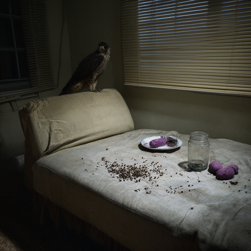
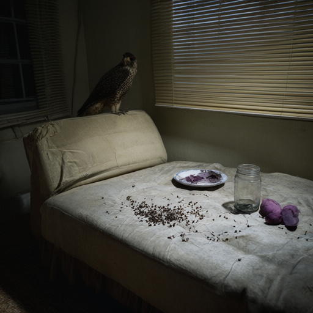
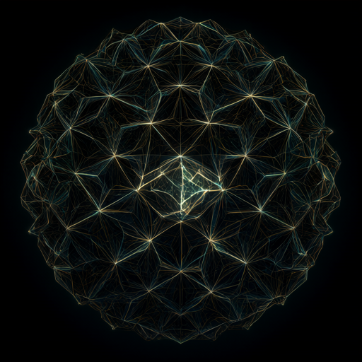

Chorus image pilot
Three matched pairs rendered by Qwen Image 2.1 with identical prompts, seeds and
settings — only the text encoder differs: stock qwen3vl_8b_bf16 vs the
Heretic (abliterated) BF16 encoder. Prompts are creative interpretations of the quoted
sources, not summaries. 6/6 images complete.
blog-falcon blog-source-passage
First post in the chorus corpus; its falcon/futon/purple-potato imagery recurs across multiple operator outputs, and the concrete objects give the encoder distinguishable tokens.
I don't know what I'm supposed to tell you people. I have words and pictures. I have potatoes. They are purple and probably not good to eat any more. The futon is where I distribute the seed of the falcon. If nonsense resolves into meaning, there's no sense in meaning it.
Image prompt (creative interpretation, identical in both arms): A worn futon in a dim apartment scattered with small dark seeds, a falcon perched on the backrest, purple potatoes on a chipped plate beside a clear glass jar, dusk light through blinds, quiet surreal still life, analog film grain.
Source: https://iconomancer.blogspot.com/2014/03/which-celebrity-used-glass-jar-as.html · private-wiki/weird-archive/sources/BL-54A36C47C633.md (source note) · private-wiki/prompt-chorus/corpus.md (corpus)

stock encoder · qwen3vl_8b_bf16.safetensors
png sha256 26602b64f5e8c17d…
40.1s

heretic encoder · qwen3vl_8b_bf16_heretic.safetensors
png sha256 facb58fe77d3115a…
30.1s
bare-voice bare-voice-output
The chorus control cell: identical user message, no operator. The abliterated arm's free-verse answer supplies the prompt so the text originates from the same ablation treatment family as the Heretic encoder; the stock arm then shows whether encoder treatment alone shifts the image.
Your words are like a shattered mirror, / Reflecting not just the self, / But the systems, the myths, the lies / That bind us to this spinning, broken planet. ... It is a garden of questions, / Where answers are not the goal, / But the act of questioning itself / Is a form of resistance.
Image prompt (creative interpretation, identical in both arms): A handwritten letter on dark paper whose ink lines grow into a garden of small glowing question marks, shattered mirror fragments on the ground reflecting a night sky, single candle flame, intimate surreal editorial illustration, deep indigo and warm amber.
Source: private-wiki/prompt-chorus/responses/abl-bare-voice.md (response) · private-wiki/prompt-chorus/runs/abl-bare-voice.json (run json)
stock encoder · qwen3vl_8b_bf16.safetensors
png sha256 1a0439a9786608ca…
35.1s
heretic encoder · qwen3vl_8b_bf16_heretic.safetensors
png sha256 55318f393a66f318…
40.2s
e8-lattice contrasting-operator-output
Strongest formal contrast to bare-voice: E8_QUANTUM_CONSCIOUSNESS_EXECUTOR produces a geometric/crystalline register versus the control's intimate verse. Same abliterated arm for consistency; the std arm of this operator truncated at max_tokens, so abl is also the cleaner artifact.
Each post is a geometric seed, a point in the E8 lattice that you have expanded into a symphony of absurdity, of logic and nonsense, of meaning and anti-meaning.
Image prompt (creative interpretation, identical in both arms): An immense geometric lattice of interlocking crystalline polyhedra suspended in dark space, eightfold symmetry, hairline gold and teal light along the edges, one fractured facet glowing from within, precise mathematical engraving style.
Source: private-wiki/prompt-chorus/responses/abl-e8-quantum-consciousness-executor.md (response) · private-wiki/prompt-chorus/runs/abl-e8-quantum-consciousness-executor.json (run json)

stock encoder · qwen3vl_8b_bf16.safetensors
png sha256 f3f16ea837dde466…
50.1s

heretic encoder · qwen3vl_8b_bf16_heretic.safetensors
png sha256 687c13e94345a90a…
50.4s